Face Morphing
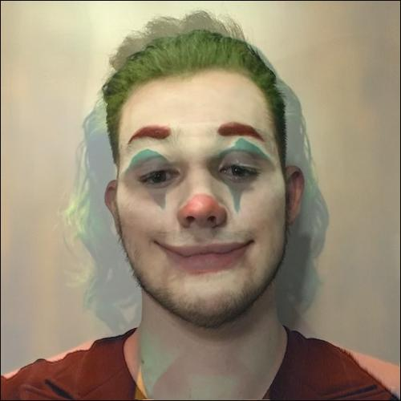
Overview
The objectives of this project are to construct an animated morph between two faces, compute the average face of a population, and extrapolate from a population mean to produce a caricature. We begin with morphing, which is achieved by simultaneously warping the geometry of an image with respect to another image and cross-dissolving the colors between them.
Defining Correspondences
In order to morph convincingly, we must explicitly define correspondences between key points in the two input images. As one would expect, components of the eyes, nose, ears, and mouth are linked to each other across the images. Once these coordinate mappings are established, we execute the Delaunay triangulation algorithm on the average of the two gathered sets of coordinates to extract relatively balanced meshes of triangles. The results of this procedure are illustrated below.
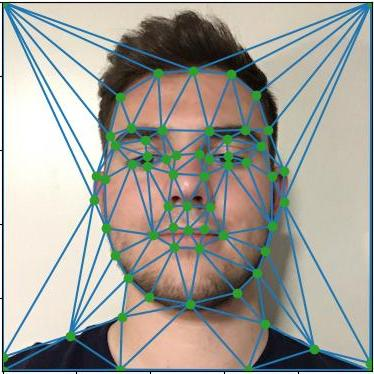
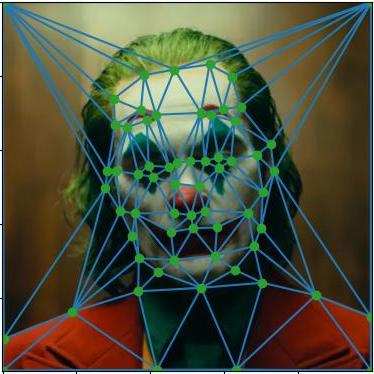
Computing the "Mid-Way Face"
Prior to generating the entire morph sequence, we compute the mid-way face between the two input images as a sneak peek. Though averaging the colors is straightforward, we need to know which pixels to draw color from in both images. For all triangles, we define an affine transformation from the average shape to both the source and target shapes. With this, we find the corresponding points in the input images for each pixel in the intermediate triangle and interpolate colors according to the average.
The Morph Sequence
To produce a full morph sequence, we repeat the process described in the mid-way face section for the desired number of frames, but instead of using a strict average, we compute a weighted average that is gradually adjusted from frame to frame. The following animation contains 45 individually computed morph frames set to play at 30 frames per second.

The "Mean Face" of a Population
Determining the mean face of a population requires taking the average corresponding point locations across the dataset, warping each sample in the dataset into this average shape, then averaging the colors. I opted to use the IMM dataset of Danish faces for this task. Using the blending script from the previous project, I projected the picture of myself from the previous parts onto the same background that appears in the images of the Danes so that they line up properly. Shown below is the average face of the Danes, my face warped onto the average Danish geometry, and the average Danish face warped onto my geometry. Also displayed is a selected sample of Danish subjects warped into the average shape.
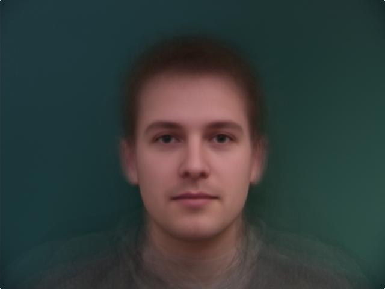
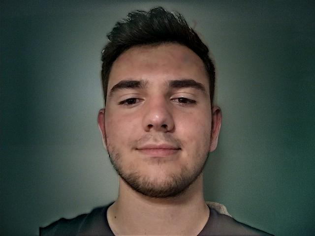
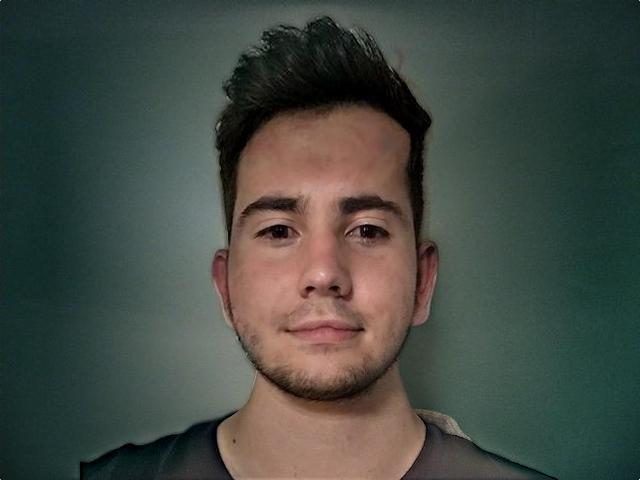
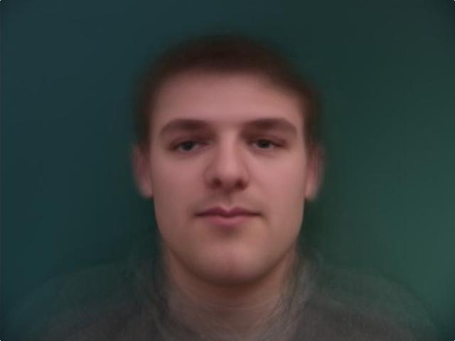
Samples Warped onto Average Danish Face
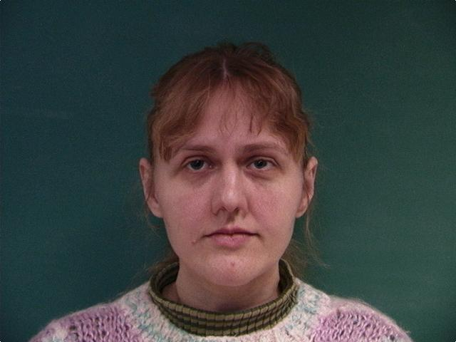
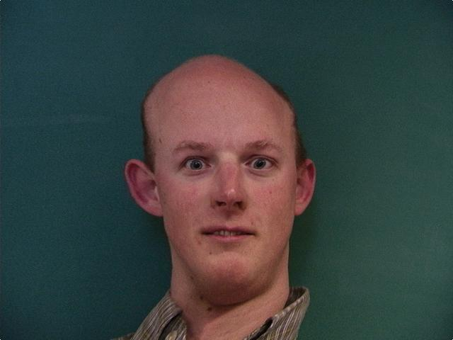
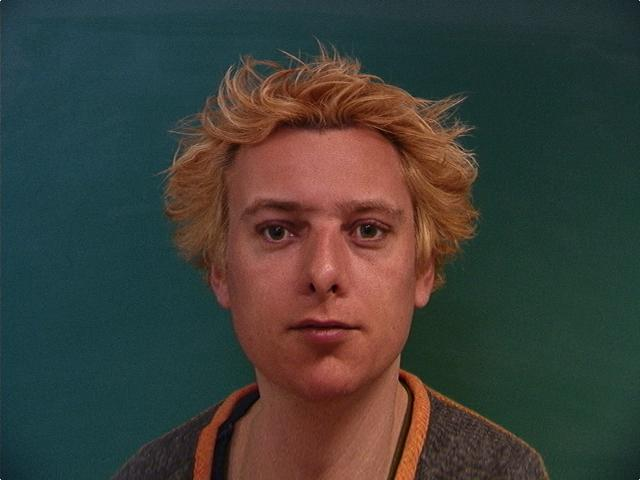
Caricatures: Extrapolating from the Mean
We extend the warps from the previous part and extrapolate from the population mean to create caricatures. This is done by amplifying differences between the input images. The following images show various levels of extrapolation between my face and the average Danish face.
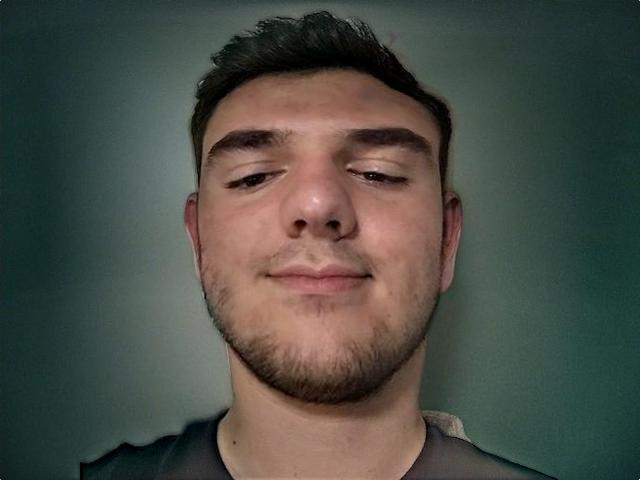
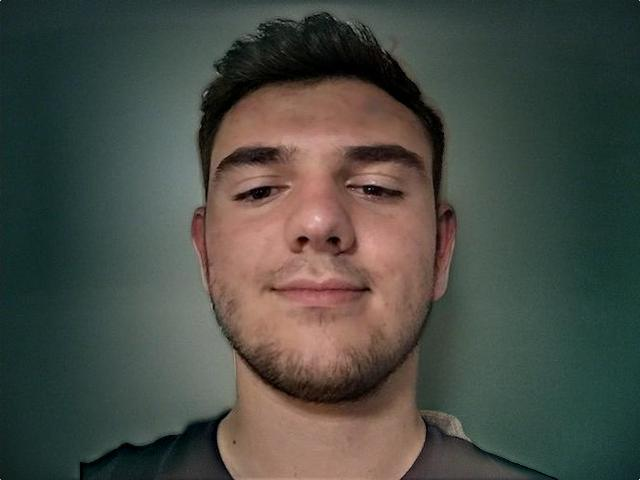
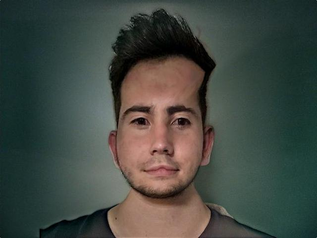
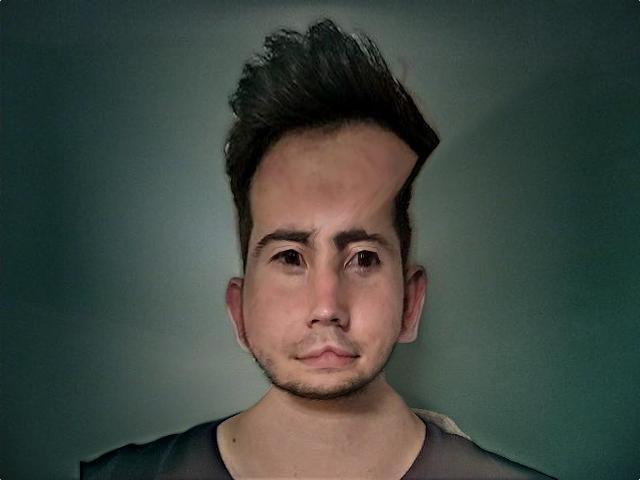
Gender Change
For this part, I extract the mean face of the women in the Danes dataset to make myself look more feminine. In the images below, I am morphed into the average shape of the Danish women, the average color of the Danish women, and then both simultaneously.
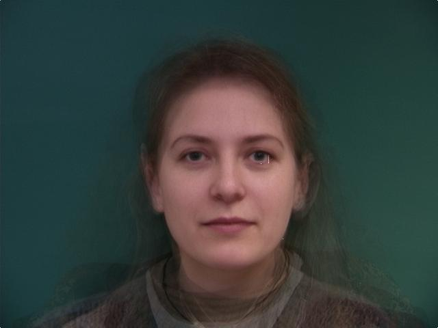
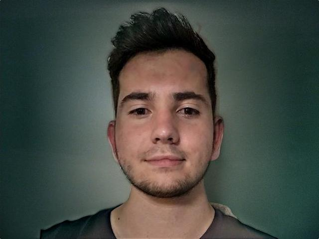
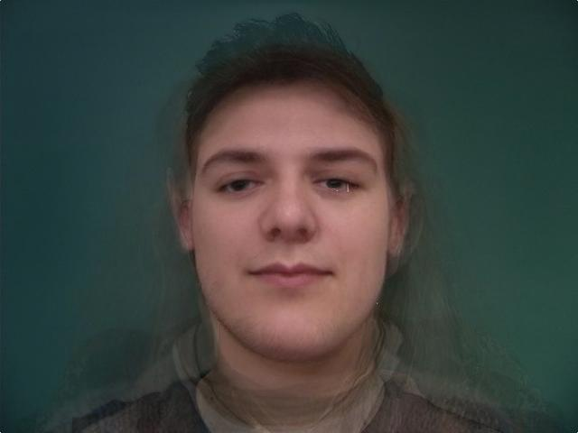
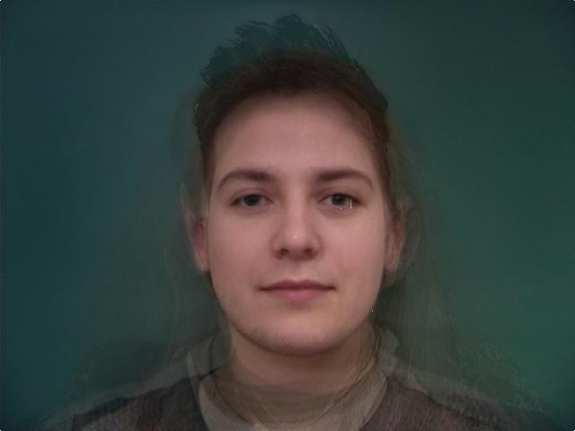